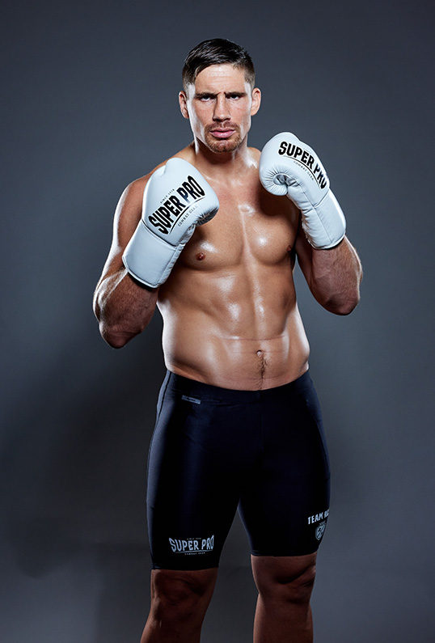

Wie ben ik?
Hallo dit is mijn webside over mij. Ik ben max koelewijn 15 jaar uit en woon in Haren. Ik heb een zus van 17.
wat doe ik in het dagelijkse leven?
kickboksen
gymen
eten
tv kijken
fc Groningen kijken
Kickboksen
de gym waar ik train is
aihato.
ik train hier nu 2 jaar. Het bevalt me heel erg. Mijn idol is Ricvo Verhoeven.

fc Groningen
Ik ben geen voetbal fan maar ben wel fan van fcg. Zo vaak mogelijk zit ik in de Euroboorg mijn club aan te moediggen.